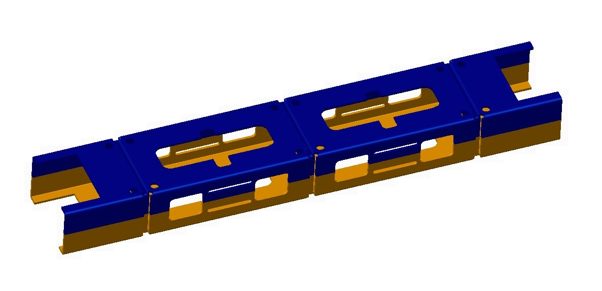

板金アセンブリにおいては、板厚が類似したコンポーネントを統合して部品点数を削減することで、アセンブリ全体の製造コスト低減に寄与します。
コンポーネントの設計においては、最終アセンブリで部品点数を削減できる可能性を常に考慮する必要があります。これは全体の製造コスト削減につながります。アセンブリにおける部品点数削減には、以下のようなさまざまなコスト面でのメリットがあります。
部品の取り扱いコスト、在庫コスト、購買コスト、および梱包コストの削減。
部品ごとの不具合発生の可能性が低減されます。
付加価値を生まない作業（NVA：Non-Value Added）にかかるコストが低減されます。
さらに、アセンブリ工程の自動化が容易になり、かつ低コストで実現できるようになります。
